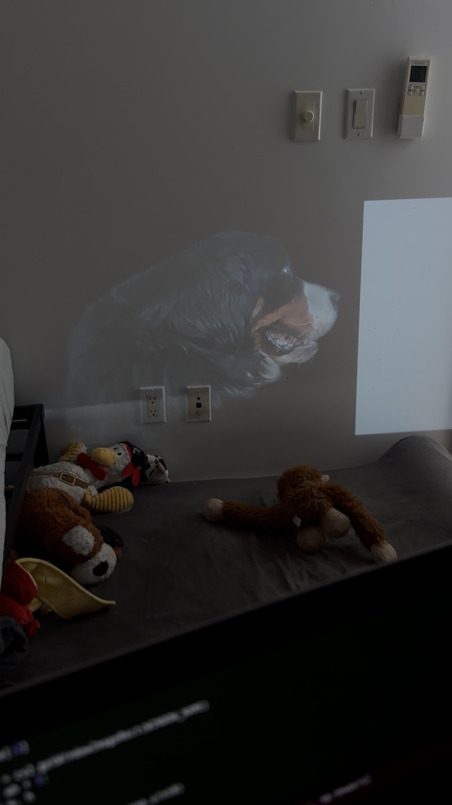
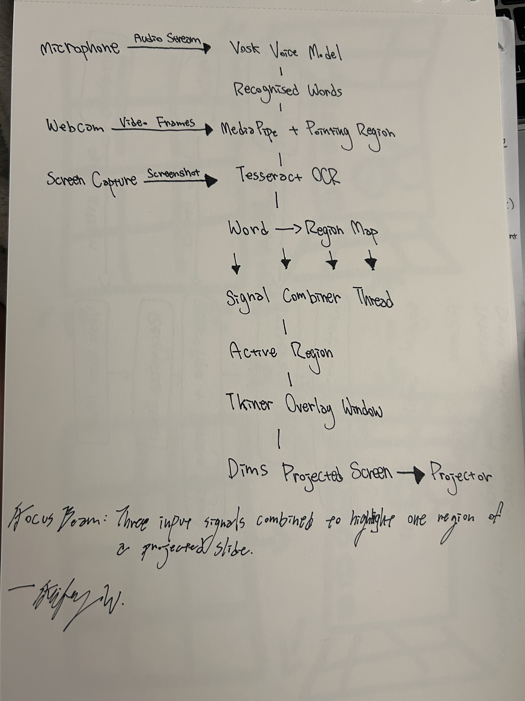
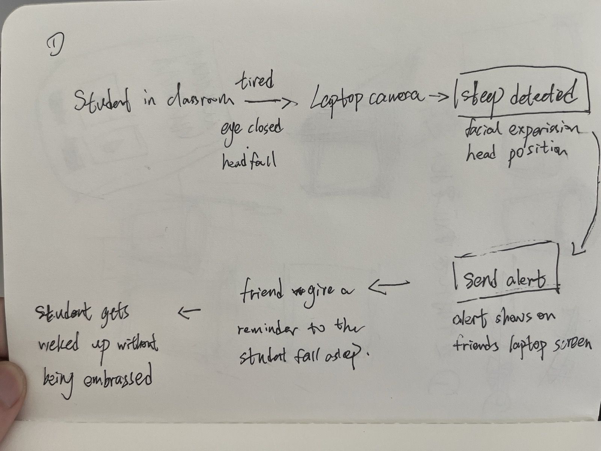
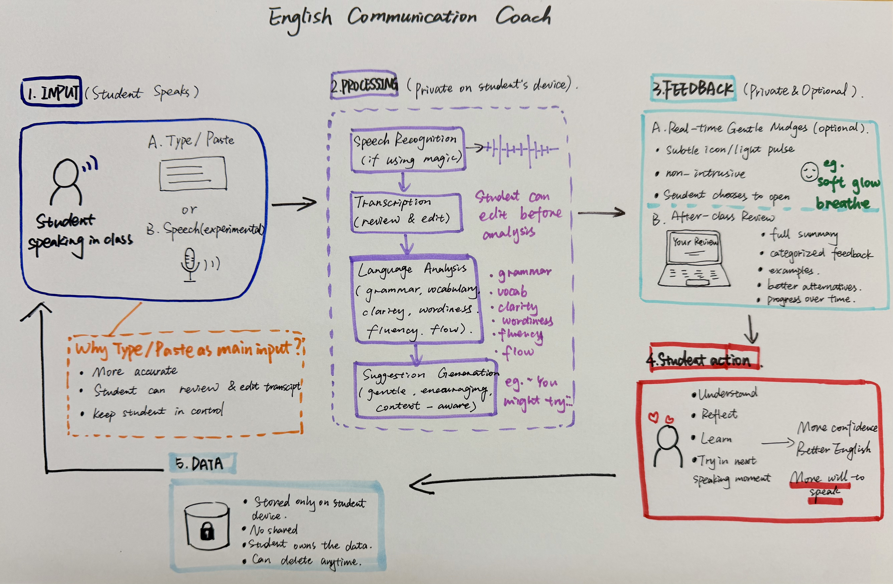
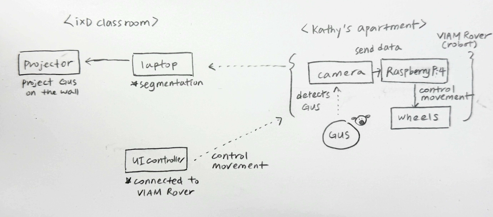
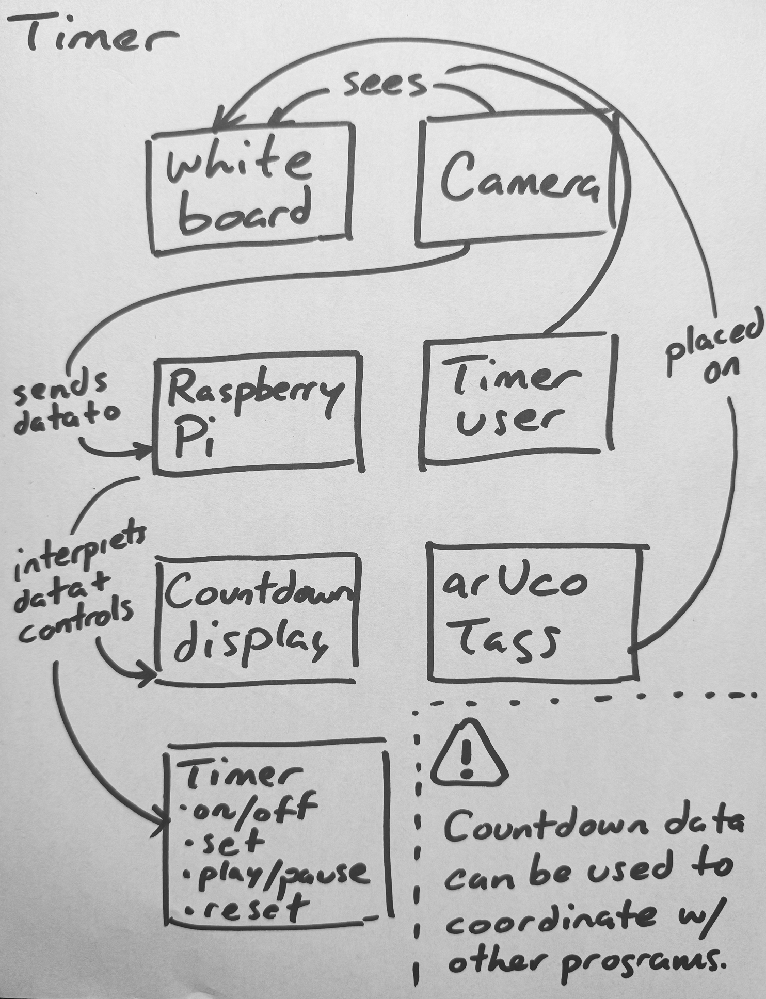

What if a classroom was a multi-agent system? Not a room with computers in it — a room whose computation was distributed across cameras, code, and the people who walk in. Eleven students, two instructors, six cameras, one event bus. Over a semester, we built it. This is what one class looks like when the room is paying attention.
Read it as a clock. The chapters below trace a single Monday session, 4:45 PM to 7:50 PM. Each phase introduces the projects that activate during it. The story isn't ten projects in a row; it's one room over three hours.
Pre-Arrival
The room warms up before anyone is in it.
The room comes online before the people. Smart Stage, the room's brain, boots on a Raspberry Pi 5, polls the V-JEPA classifier sitting on a GPU machine across the network, and reads the schedule. The room is empty; V-JEPA confirms it; the brain settles into a pre-arrival posture — ambient music up, captions off, sensing quiet.
Gordon's Smart Stage absorbs much of what was originally scoped as a separate room-mode project: ambience that adapts to occupancy, music that knows the difference between an empty room and a room filling up. Yuxuan's and Seren's earlier explorations of those room-mode transitions live inside the orchestrator now. The brain has multiple authors.
In the corner, Sophie's Forest in the Classroom seeds a faint generative landscape on the back projection — a visual ambience that will respond to voices later in the session. Right now it is barely there. A room reading itself.
Gus, the dog, is online but not yet projected. The Viam Rover at Kathy's apartment has booted, the camera has handshake. Gus's appearance is scheduled for break, not now. The system knows to wait.
What's missing from this state: Smart Stage will fail gracefully if the V-JEPA server becomes unreachable, holding music state and continuing other operations. We never tested this on a real outage.
Arrival
Bodies in the frame.
Three ceiling-mounted PoE cameras — left, right, and center-back of the room — produce the bird's-eye view that Gordon's overhead dashboard stitches into one canvas. YOLO6-nano runs on the Pi; blue calibration markers anchor the geometry. As students enter, dots appear on a flat plan of the room. The room knows there are people in it now.
Music fades. V-JEPA, polled every ten seconds, shifts its prediction from empty to group work and then, as people sit, to lecture. The brain confirms lecture mode. The room hasn't been told what to do; it has been told what it is.

Lecture
Capture, attention, support — opt-in only.
The brain pivots to lecture posture. Sherpa-onnx streaming ASR turns the instructor's voice into live captions, fed to a wall display and to a Discord channel as a rolling summary. This is Smart Stage doing what it was designed for — coordinating capture, voice synthesis, and ambient state from a single state machine, ~990 lines of Python on a Raspberry Pi.
Feifey's Focus Beam stands by. When the instructor points at a region of the projected slide, MediaPipe reads the gesture and an overlay dims everything else. The beam doesn't ask for attention; it removes the friction of finding it.
Then I move my hand again, but a bit faster this time, and the highlight follows, slightly lagging. After a few seconds, he tilts his head and asks if I was controlling that.
— Feifey, on Jason watching Focus Beam for the first time
The interaction sits in an interesting place — foreground attention, but background initiative. The user doesn't know whether the system is responding to them or just performing. That ambiguity is the tell. Feifey hasn't yet resolved when "pointing intentionally" is distinct from "gesturing naturally"; the line between control and ambient assistance is the unfinished work.

Behind both, Shuyang's Assignment Tracker listens to the captions and the whiteboard for anything that sounds like a deadline or a task — an ambient archivist. Smart Stage's voice assistant stays muted until invoked.
One attention tool waits, opt-in. Kevin and Mingyue's Sleep Detection is silent unless a student opts in. The whitepaper makes a strong claim that the room should have a place to hold context, but the class also made a strong claim that the room shouldn't watch people who haven't asked to be watched. Lecture is where those two principles negotiate.
The design decision behind Sleep Detection came from a real moment Kevin had in a guest talk.
I didn't want the professor to call me out. If they noticed me and said my name, it would feel embarrassing in front of everyone. At the same time, I did wish someone could have helped me in that moment. If a friend sitting next to me had quietly nudged me — I think that would have been the best kind of reminder, something small and supportive, without drawing attention.
— Kevin, on the moment that became the project
The system the team built routes the camera's read of a drowsy student not to the instructor, but to a friend in the room — a quiet ping, not a call-out. The interaction is deliberately lateral, peer to peer, and the tone of voice matters as much as the detection. When Kevin tested it on a friend, Maggie said it felt "less aggressive than calling someone out" — and then surfaced the tension that the project hasn't resolved.
Yeah… a little. Because the camera is still watching you the whole time. Even if the response is private, that part doesn't really go away.
— Maggie, when asked if it still felt like surveillance
That's the unfinished work. The response is private; the watching is not. Opt-in is the simplest answer the class arrived at, and it's the same answer NodCheck reaches by a different path. The room can offer support without imposing it — but only if the people in the room have said yes first.

Tony — Ramon and Shuyang's classroom agent — sits in the back, watching with YOLO and object detection, ready to respond if the room shifts emotional register. Tony is the project that most resists the simulator's tidy categories. The point is not to make the user be part of Tony but for Tony to be part of you. Tony's first build had the channels swapped — reds for blues — and the heat sensor reads 84°F constantly. The body of the agent is its own debug log.
Yuxuan's English Communication Coach, called Lumi, holds quiet on a desk, ready for Q&A. The original design was real-time correction; class feedback re-cast it as private, delayed, gentle. The shift came from one Monday discussion.
She said she did not want the feedback to feel like, "you made a mistake here. Fix it." She suggested that the system should sound more encouraging, like, "this is not bad, but have you considered this?"
— Yuxuan, on Kathy's redesign of the feedback layer
Lumi catches a small set of common ESL patterns — more good becoming better, informations becoming information — and offers them as suggestions after the speaking moment, not during. The biggest unsolved problem is the transcript itself: browser speech recognition is unreliable, and so the prototype now treats the transcript as a draft for the student to review before analysis.

Break
Gus appears.
The room exhales. Gordon's brain transitions ambience — music returns, captions stop. The break is explicit; it is scheduled. And then, on the far wall, Gus appears. Not on a screen — the team segmented the rover's video and projected the dog onto the wall directly, so Gus reads as a window, not a feed.
Gus on the wall felt less like a screen and more like a window.
— Kathy, JuJu, and Seren, retro
The trio — Kathy, JuJu, Seren — built a two-location system: a Viam Rover 2 with a camera at Kathy's apartment, segmentation in the classroom, voice triggered by a phrase ("hey buddy!") that students could call out. The interaction is small on purpose: a low-stakes social beat in the middle of a class day.
What broke is honest: the rover's Pi was already configured for Viam's network and didn't want to join IxD's Wi-Fi without a full reset. Latency was unconfirmed end-to-end — rover to laptop to segmenter to projector — and the team never identified which step was the bottleneck. The treat dispenser, planned, was not built.

Phil's Timer activates here too — it scopes the break. Magnetic arUco markers stuck to a foamcore board face up; Horizon, the OAK-D on a tripod near the whiteboard, reads them and sets the countdown. The interaction is tactile in a way the rest of the system is not. You walk to the board, you flip a tag.
Group Work
Lab posture — small groups, surfaces, helpers.
V-JEPA's classifier trips over to group work; Smart Stage shifts ambience accordingly. The whiteboard becomes the room's center of gravity. Phil's Timer scopes the activity — this is its most natural use, and the moment it became something more than a personal tool.
Bruno is at the whiteboard. Phil lets Bruno figure out the interaction for himself using the icons taped to the arUco tags. Bruno sets the timer by aiming the central tag's arrow at the 15-minute mark. He flips the play tag and the timer display on Phil's laptop confirms it's running. Carrie and Phil exclaim, "Yes!" — excited by the fact that the smart classroom is beginning to come to life.
— Phil, on Bruno using the timer for the first time
The interesting thing about the timer wasn't the timer. It was that setting one became a group gesture. To set a timer is to free oneself from wondering, "are we spending too much time on this?" Phil hasn't yet resolved how the camera mounts in a way that disappears for people without losing sight of the board — the open hardware question.

Darren's Imprint reads handwriting from any surface in the room and makes notes from it — the kind of capability that only matters if it is genuinely surface-agnostic. Tony, in this phase, shifts posture from observer to embodied helper. The same agent the room watched in lecture is now something you can ask a question of. Same body, different role.
Sophie's Forest, dormant in lecture, reactivates: the more voices the room produces, the more the projected forest grows. Sophie's retro is honest about how little of the difference between species is yet articulated — I would need to differentiate the diverse plants — and that's the right place for the work to be: visually settled, structurally unfinished.
Tech Demo
Focused work, demos, and opt-in checks.
Demos and focused work share a phase. Smart Stage holds attention but lowers its own footprint — the brain knows demos are not lectures, even when the speaker is at the podium. (The simulator flagged this as a place where the room can mis-infer; a body at the podium with the rest of the class seated reads identically as lecture from the camera angle.)
Tech demos are a particular kind of attention test. The instructor is walking the room through how something works — how to set up Node, how a sensor pipeline fits together, how an ambient system listens without being seen — and the room either follows or doesn't. Most rooms don't say which.
Kathy's NodCheck exists because of one of those moments.
She scans the room, notices all the blank stares, and asks if it makes sense. Nobody says anything. I vigorously shake my head no. She immediately perks up and genuinely thanks me for being honest. "I had a feeling people were lost from all the blank stares!"
— Kathy, on the moment that became NodCheck
The lesson Carrie was teaching was, with quiet irony, on ambient and invisible tech — sensing systems that read the room without being seen. The room was illegible to her until one person made a single explicit gesture. That's the design problem in one frame: there should be a low-risk way for a student to say I'm lost, and the smallest possible signal — a head shake — should be enough to make it legible.
In Tech Demo posture, NodCheck opens a short comprehension window tied to a question and accumulates yes-nods and head-shakes on the instructor's screen. The interaction is simple and physical — you don't have to interrupt, raise your hand, or admit anything in front of the room. You just nod or don't.
What broke is the staging. The trigger button doesn't currently live anywhere useful for either students or instructor to reach. Multi-user sensing isn't built yet. The version Kathy wants — multiple students at once, totals displayed on the instructor's device, the trigger placed somewhere both parties can find — is the clearest path forward, and it's the version the Tech Demo phase actually needs.
Wrap
Dismissal. The room logs the class.
The session resolves. Smart Stage posts a Discord summary; Assignment Tracker posts deadlines it caught; Lumi has a small backlog of suggestions that no one will see unless someone opens the private review pane. Forest stops growing. Gus has been gone for half an hour. Person count drops, V-JEPA settles back to empty, and the room dims.
The classroom logged the class.
A Multi-Agent Room
Cameras, code, and people on one bus.
Most multi-agent systems literature — AutoGen, CrewAI, LangGraph, MCP-based frameworks — assumes all agents are software. This classroom puts three different kinds on the same bus: perception agents that sense the room (cameras, V-JEPA), reactive agents that respond to events (the student projects, some LLM-backed, some not), and human agents — the students and professors physically present, whose goals the system exists to serve.
The interesting design problem isn't "how do we make software agents collaborate." It's how a coordination layer holds context across cameras, code, and people, and routes events — ambient, broadcast, or directed — based on what the room is doing. A fatigue alert during a five-minute break is noise. During a forty-five-minute lecture, it is signal. The same reading, different context.
The orchestrator that does this routing is designed but not yet built. The whitepaper is the design document. This site is the room those decisions live inside.
Contributors
Instructors
- Carrie Kengle
- Bruno Kruse
Students
- Darren Chia — Imprint
- Feifey Wang — Focus Beam
- Gordon Cheng — Smart Stage
- JuJu Kim — Gus Mode
- Kathy Choi — NodCheck, Gus Mode
- Kevin — Sleep Detection
- Mingyue — Sleep Detection
- Phil Cote — Timer
- Ramon Naula — Tony
- Seren Kim — Gus Mode
- Shuyang Tian — Tony, Assignment Tracker
- Sophie Lee — Forest in the Classroom
- Yuxuan Chen — English Communication Coach
Source Repositories
- smart-objects-cameras — class template, detectors, classroom API
- so-smart-stage — Smart Stage orchestrator
- so-vjepa-probe — V-JEPA classifier server
- so-overhead-dashboard — bird's-eye person tracking
Companion Artifacts
- The whitepaper
- Network diagram
- Bibliography
- Class Timeline simulator (in source repo,
classroom-api/)
Course Hub
- Smart Objects course site — Bruno Kruse & CK
- Camera & Pi setup — quickstart, SSH, detector docs
- Lectures, labs, demos — full semester
- Idea Generator — AI-powered creative prompts